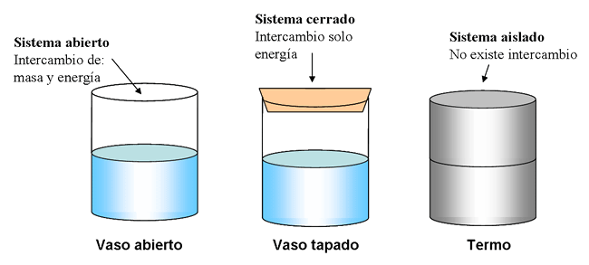
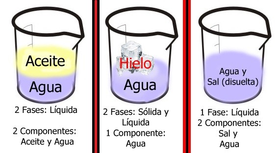

Sustancias y mezclas - Sistemas Materiales
La observación de nuestro mundo circundante nos muestra una realidad compleja e intrincada. Pensemos solamente en lo que se encuentra en nuestra aula: personas, aire, pizarrón, tizas, bancos, sillas, escritorio, paredes, ventanas, vidrios, puerta, etcétera. Y si ampliamos nuestra consideración fuera del edificio escolar, veremos plantas, más personas, automóviles, edificios, animales, etc., etc., o sea, que la complejidad se incrementa rápidamente.
Es evidente que resulta imposible estudiar en forma simultánea todo lo que nos rodea. Necesitamos aislar de modo real o imaginario un conjunto de objetos, o uno de ellos o una fracción para su estudio detenido y minucioso. Así, analizamos el agua de un vaso, un lápiz, un borrador, un cubito de hielo, la sal de mesa, el aceite, el aire, el alcohol, un trozo de granito, una porción de arena, un pedazo de madera...
Cada una de estas porciones del Universo presenta una organización más o menos intrincada, pero siempre compleja, y constituyen diferentes sistemas. Por otra parte, ya sea que se encuentren en estado sólido, líquido o gaseoso, dichas fracciones se caracterizan por ocupar un lugar en el espacio y por estar dotadas de masa, es decir, por estar compuestas de materia. Esto determina que las porciones mencionadas, cuando son sometidas a un estudio experimental, reciban la denominación de sistemas materiales. Entonces, podemos definir Sistema Material:
|
Es una porción del Universo que se independiza, en forma real o imaginaria, del resto, para su estudio. |
Los sistemas materiales pueden intercambiar materia y/o energía con el medio que los rodea, y según el tipo de intercambio pueden ser:
-
Abiertos: donde hay intercambio de materia y de energía. Ejemplo una fogata
-
Cerrados: donde no hay intercambio de materia, pero sí de energía. Ejemplo una lamparita encendida.
-
Aislados: donde no hay intercambio de materia ni de energía. Ejemplo un termo.

Fuente: http://www.fullquimica.com/2010/09/sistema-quimico.html
Cuando se tienen en cuenta las propiedades intensivas, los sistemas materiales se clasifican:
|
Homogéneo: cuando las propiedades intensivas son las mismas en cualquier parte del sistema. Ejemplo: agua de la canilla, una cucharada de azúcar.
Heterogéneo: cuando las propiedades no son constantes en todos los puntos del sistema. Ejemplo: mezcla de agua y aceite. En estos sistemas se pueden diferenciar fases, o sea porciones en las cuales los valores de las propiedades intensivas son constantes. Por ejemplo, una bebida con cubitos, la bebida es una fase y los cubitos otra fase.
|
Fase: Es toda porción homogénea de un sistema material.
Las fases están separadas entré sí por límites bien definidos llamados interfaces. Los sistemas heterogéneos se pueden separas las fases por medio de diversos métodos. La elección del método a utilizar dependerá de las características de las sustancias y de sus estados de agregación.
Inhomogéneo: cuando los valores de las propiedades intensivas son distintos en diferentes partes del sistema, pero en ellos no existen superficies de discontinuidad bien definidas, sino que se produce una transición gradual en esos valores a medida que nos trasladamos en el sistema. Ejemplo: la atmósfera terrestre.
Un sistema material puede tener una o varias sustancias, las que se denominan componentes. Si tiene un solo componente se trata de una sustancia y si tiene varios de una mezcla. Ejemplo: un sistema formado por agua y aceite, es un sistema heterogéneo de dos componentes y dos fases. El diamante, es un sistema homogéneo de una fase y un componente.

Fuente: http://nosotrosyciencia.blogspot.com.ar/2011/10/fases-y-componentes-de-un-sistema.html
Obra publicada con Licencia Creative Commons Reconocimiento Compartir igual 4.0